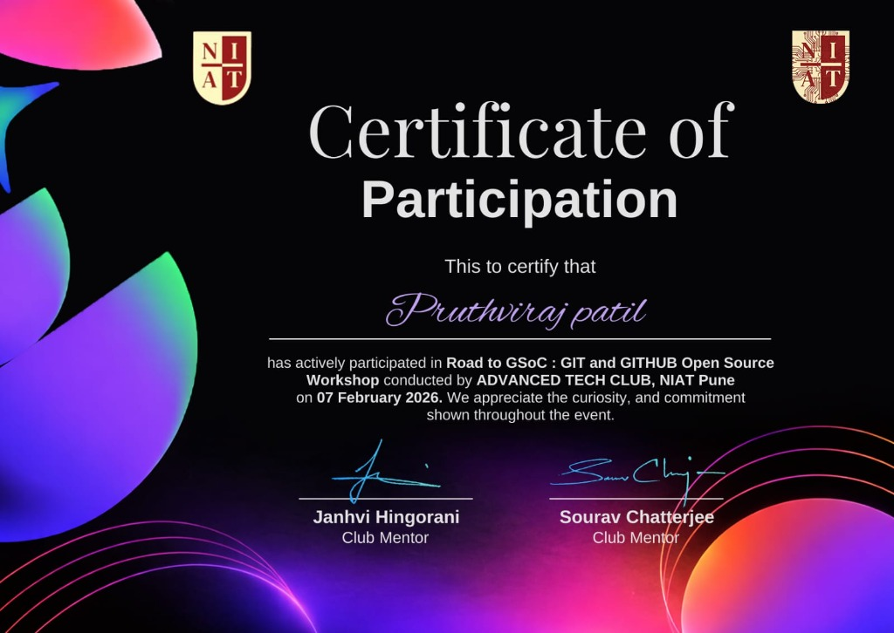

Hi, I'm
Pruthviraj Patil
Aspiring Software Engineer & Data Science Enthusiast
I enjoy building real-world projects, solving programming problems, and exploring software engineering, data science, and artificial intelligence.

Hi, I'm
I enjoy building real-world projects, solving programming problems, and exploring software engineering, data science, and artificial intelligence.
I am a B.Tech CSE (Data Science) student based in Pune, graduating in 2029. My focus is on software engineering, data science, and artificial intelligence.
I have a strong passion for building real-world projects and solving complex problems. Currently, I am focused on continuously developing my technical and problem-solving skills to prepare for professional software engineering opportunities.
B.Tech CSE (Data Science)
NxtWave Institution of Advance Technologies
Vishwanath Vidyalaya
Beed, Maharashtra
Pune, India
Class of 2029
Applications and tools I've engineered — and what's coming next.
Premium Event Management & Cryptographic QR Ticketing Platform
An enterprise-grade, full-stack event discovery, SaaS management, and cryptographic QR ticketing platform built with modern web standards, Node.js, Express, MongoDB, and Chart.js. Features smart attendee discovery, instant cryptographic QR passes, an organizer command center with live KPI analytics, and administrative moderation telemetry.
Dynamic cryptographic QR generation for secure digital tickets with live check-in validation.
Executive dashboard with Chart.js revenue trends, ticket tier velocity, and single-click CSV roster exports.
Multi-category filtering, real-time search, interactive review ratings, and digital ticket wallet.
Role-based access control, submission approval queue, financial ledger inspection, and platform health telemetry.
Study Planner & Productivity Operating System
A modern, comprehensive Study Planner and Dashboard tailored for students and developers. Built entirely with pure HTML5, CSS3, and Vanilla JavaScript—requiring zero build tools, dependencies, or backend servers. All data is persisted locally in the browser with seamless Light/Dark mode support.
Interactive drag-and-drop workflow tracking across To Do, In Progress, and Done.
Built-in 25-minute deep focus timer with visual circular progress indicators.
Detailed calendar view to block out study sessions and schedule coursework.
Track syllabus progress, visualize subject mastery, and monitor study streaks.
Real-Time Weather Forecast & Air Quality Dashboard
A modern, responsive weather intelligence platform that delivers real-time weather conditions, 5-day / 3-hour forecasts, and live air quality metrics. Engineered with pure Vanilla JavaScript (ES6 Modules) and CSS3, integrating OpenWeatherMap APIs, GPS geolocation, city search autocomplete, local storage favorites persistence, and seamless light/dark mode theming.
Live temperature, atmospheric conditions, and air pollution metrics for any location.
Interactive 3-hour interval forecasts with temperature, conditions, and precipitation trends.
Global city search with suggestions alongside automatic GPS geolocation detection.
Save favorite cities to LocalStorage with instant switching and full light/dark theme toggle.
Cinematic Movie Discovery, Advanced Filtering & Watchlist Hub
A modern, cinematic movie discovery platform built with Vanilla JavaScript (ES6 Modules), CSS3, and Vite, powered by The Movie Database (TMDB) API. Features real-time debounced search, multi-parameter filtering, interactive YouTube trailer modals, user ratings, analytics dashboard, and comprehensive LocalStorage persistence for watchlists and favorites.
Explore trending, popular, top-rated, and upcoming releases with genre feeds and dynamic hero banners.
Instant debounced search with genre, release year, minimum rating, language, and sorting filters.
Watch YouTube trailers in high-definition modals, inspect complete cast rosters, and discover similar titles.
Client-side LocalStorage persistence for saved watchlists, favorites, personal ratings, and viewing telemetry.
Astronomy Picture of the Day Explorer
A web application that leverages the official NASA Astronomy Picture of the Day (APOD) API to display breathtaking cosmic imagery and educational descriptions daily. Features dynamic content loading, date-based exploration, and a responsive stellar interface.
Automatically fetches and displays the latest astronomical imagery published by NASA.
Browse through NASA's vast archive to discover past cosmic events and photography.
Presents detailed explanations written by professional astronomers alongside the imagery.
Optimized for mobile, tablet, and desktop viewing for a seamless exploration experience.
Intelligent Proctoring AI
An ethical, time-series machine learning pipeline designed to identify academic dishonesty in remote examinations while safeguarding innocent students from false accusations. Built with Pandas and Scikit-Learn.
Asynchronous data alignment merging continuous video telemetry with event-driven system logs.
Utilizes rolling window engines to filter transient noise and detect sustained anomalous behavior.
Configured with a strict 90% confidence decision boundary that entirely eliminates false accusations.
Designed as a decision-support tool ensuring no student is penalized without human verification.
An interactive dashboard for analyzing and visualizing real-world datasets.
An AI-powered assistant that helps students find information and organize their learning.
Exploring soil data, nutrient recommendations, and intelligent farming with data-driven insights.
Currently pursuing B.Tech in Computer Science Engineering with a specialization/focus in Data Science, while developing skills in programming, software development, data science, and artificial intelligence.
Completed Higher Secondary education with a strong academic foundation in science and mathematics.
Professional certifications and internships that showcase my technical skills, learning, and practical experience.
Successfully completed the training on Artificial Intelligence Internship at iSTUDIO.
Successfully completed the Artificial Intelligence Internship at Internship Studio from 23rd May 2026 to 26th August 2026.

Actively participated in the "Road to GSoC: GIT and GITHUB Open Source Workshop" conducted by Advanced Tech Club, NIAT Pune on 07 February 2026.
Successfully completed the "Inclusive Open Source Community Orientation" (LFC102) course offered by The Linux Foundation, verifying proficiency in inclusive collaboration, open source contribution ethics, and community standards.
I'm always interested in learning, building new projects, and connecting with people in technology.
{kind=link}